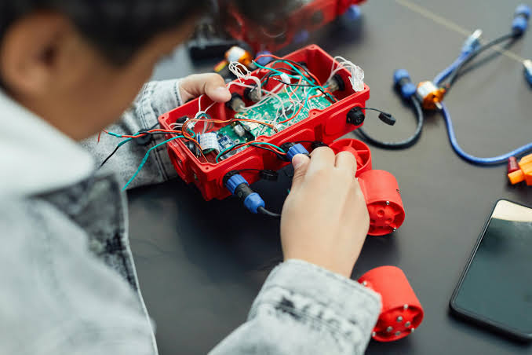
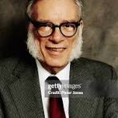
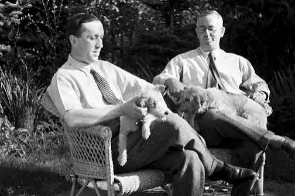
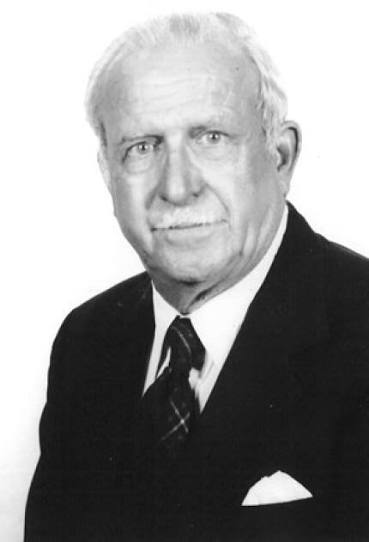

A robótica é uma área da engenharia e da ciência que envolve a concepção, construção, operação e aplicação de robôs. Ela combina conhecimentos de mecânica, eletrônica, informática e inteligência artificial para criar máquinas capazes de realizar tarefas de forma autônoma ou semiautônoma.

O objetivo da robótica é desenvolver sistemas autônomos que possam realizar tarefas de forma independente, utilizando sensores, atuadores e algoritmos de controle.



Cunhou e popularizou o termo "robótica" na ficção científica (nos anos 1940/1950) e criou as conhecidas Três Leis da Robótica.
Karel e Josef Čapek: Introduziram a palavra "robô" (a partir do tcheco robota, ligado a trabalho forçado) na peça teatral R.U.R. (Robôs Universais de Rossum), encenada em 1921.
George Devol: Criou o Unimate, considerado o primeiro robô industrial, instalado na indústria automobilística no início da década de 1960.